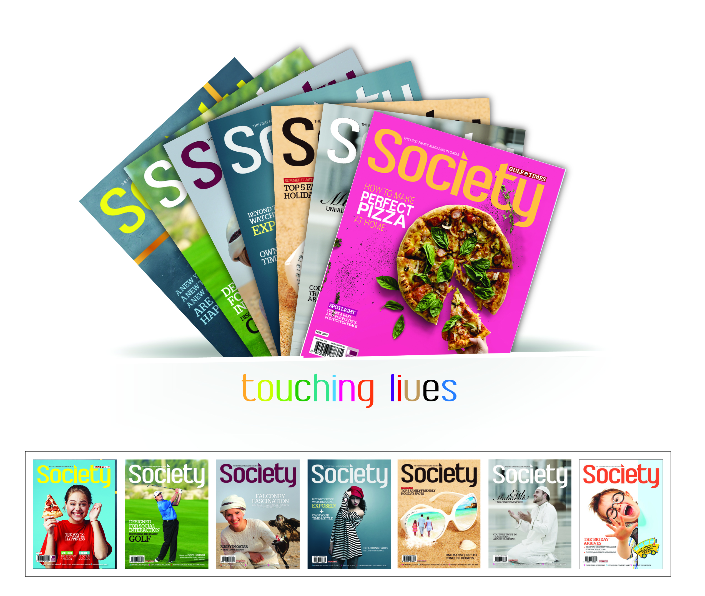
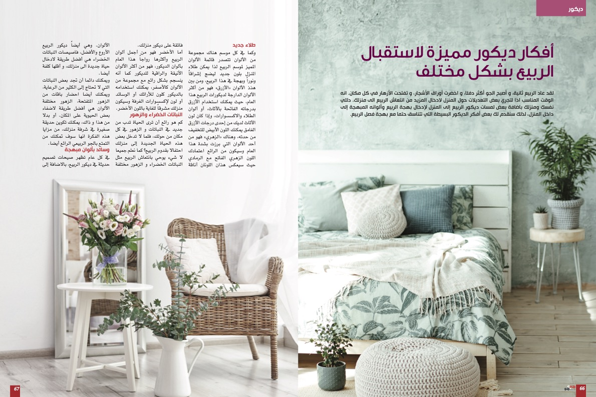
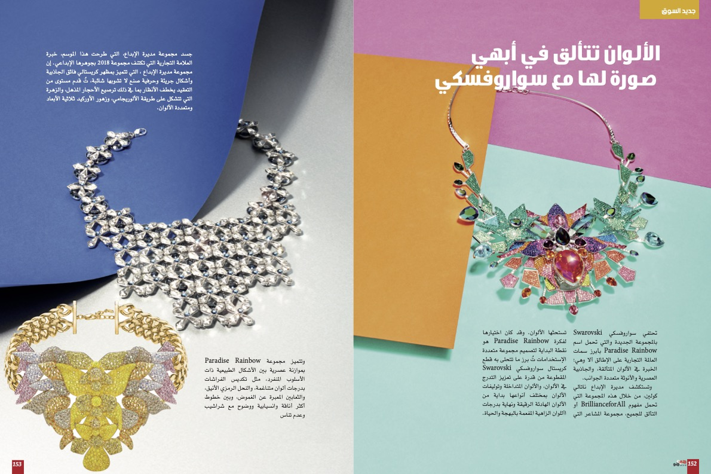
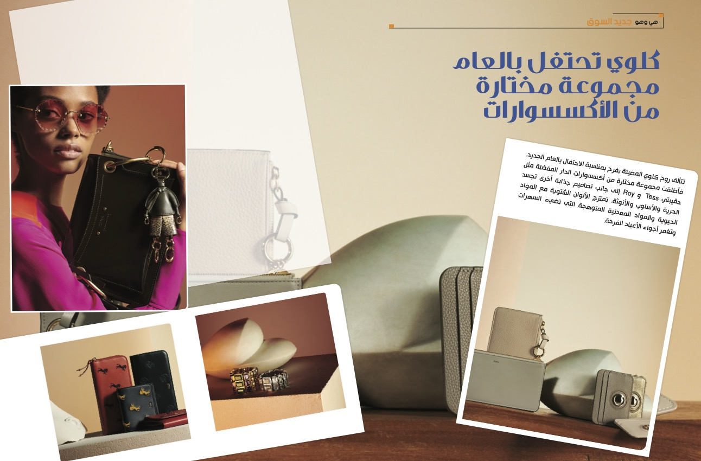
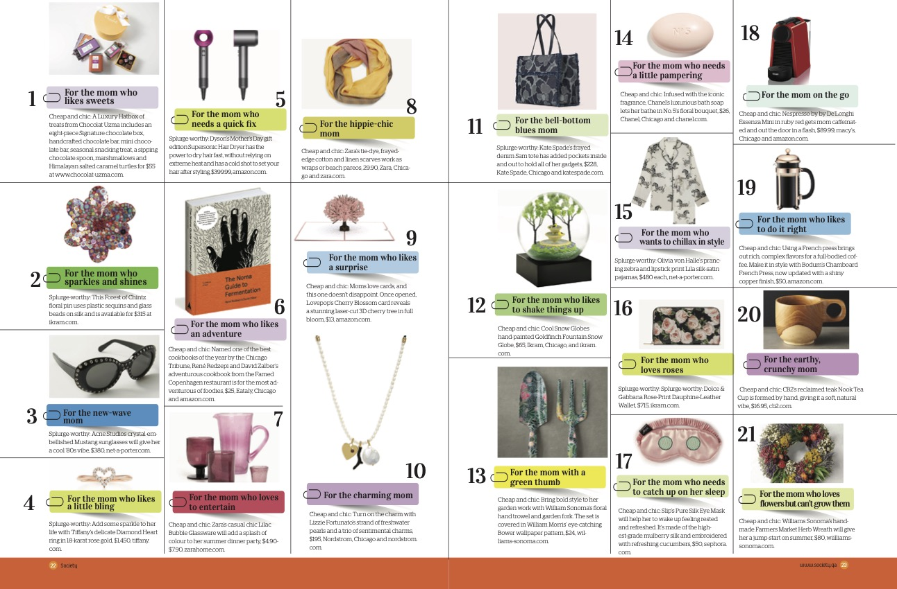
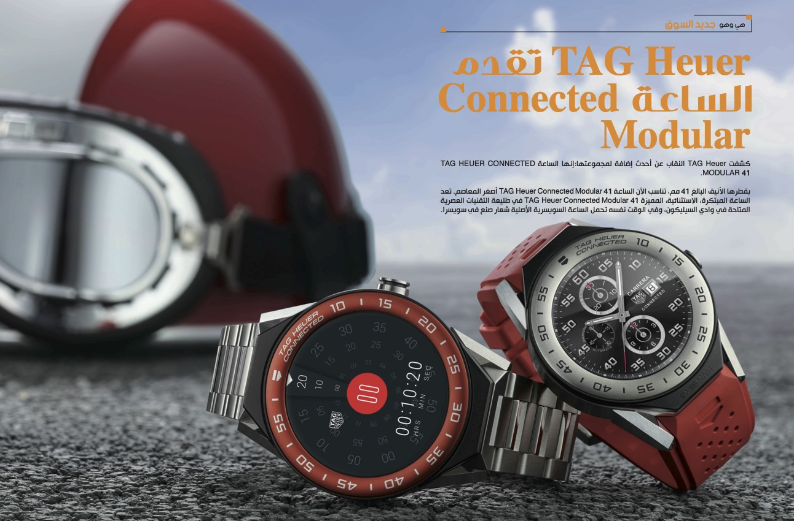
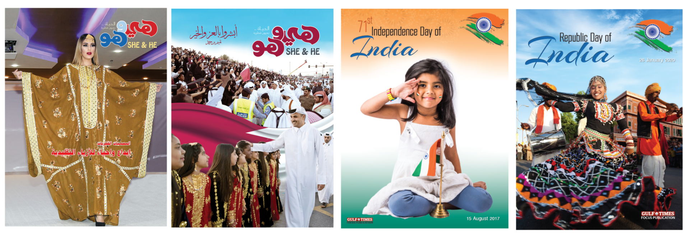
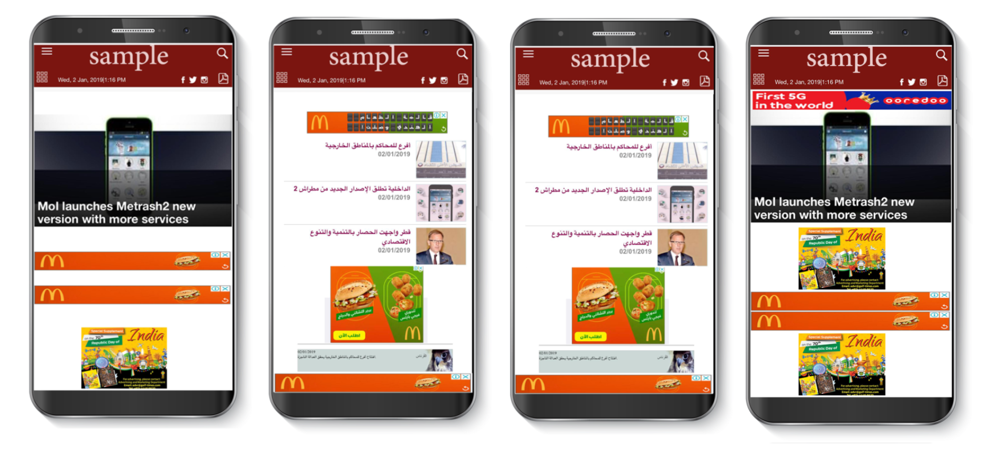
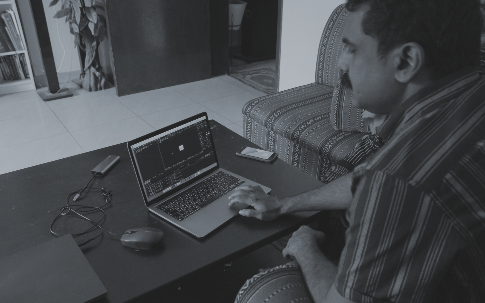

About the Expierence
Gulf Times
My role
Graphic Designer
Motion Graphic Designer
Year
2016 to 2022 Current.
Year
2016 to 2022 Current.
Compiling, Designing, layout & Production of MAGAZINES (ARABIC AND ENGLISH) Advertisement layout and compiling of Special Publications, Responsible fort the advertisement layout of SOCIETY Family Magazine Responsible fort the advertisement layout of She and He (هي وهو) Arabic Magazine Responsible for the coordination and production of a variety of graphics products and services. Assemble final layouts for printing and provide graphic design for website. Managing publishing schedules, liaising with advertisers. Co-ordinating production of advertising material. Liaising with editors, designers and proof-readers to ensure timely production. Co-ordinating and collating editors and authors’ amendments. Production of final proofs and print-ready / web-ready PDFs. Managing print orders with printers and management of in-house projects such as newsletters, calendars, rate cards and other projects as appropriate. Responsible for the color separation processes and work alongside printing agencies to ensure highest quality productions. Determining size and arrangement of illustrative material and copy. Selecting style and size of fonts and arranging layouts based upon available space. Prepare the assembly of final layouts for printing, review and approval of art materials. Maintain corporate identity throughout all projects Introduce periodic innovation and creativity to all projects.
- Majeed Nadapuram
Graphic Designing








Dukhan Bank Sports Day
That's all for with Gulf Times
